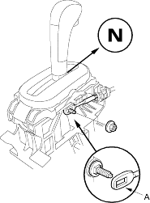
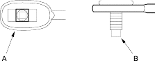
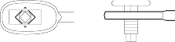
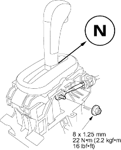

- Align the socket holder (A) on the shift cable (B) with the slot in the cable bracket base (C), then slide the holder into the base. Install the shift cable end (D) over the mounting stud (E) by aligning its square hole (F) with the square fitting (G) at the bottom of the stud. Rotate the holder clockwise a quarter turn to secure the shift cable.
NOTE: Do not install the shift cable by twisting the shift cable guide (H).

- Verify that the shift cable end (A) is properly installed on the mounting stud (B).
Properly Installed:

Improperly Installed:

Cable end rides on the bottom of the mounting stud.
- If improperly installed, remove the shift cable from the shift cable bracket base and reinstall the shift cable. Do not install the shift cable end on the mounting stud while the shift cable is on the shift cable bracket base.
- Install and tighten the nut.

- Remove the 6.0 mm (0.24 in.) pin that aligned the shift lever.
- Move the shift lever to each position and verify that the A/T gear position indicator follows the transmission range switch.
- Push the shift lock release and verify that the shift lever releases.
- Reinstall the centre console, console panel and related parts (see page 20-73).